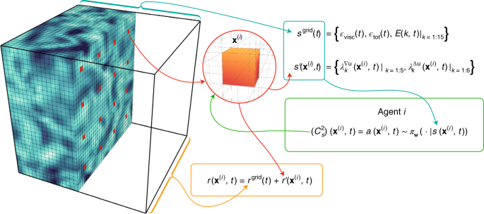
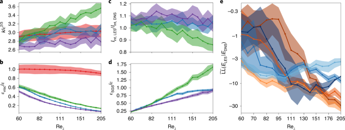

Publisher Correction: Automating turbulence modelling by multi-agent reinforcement learning
This is a Publisher Correction that fixes swapped figure captions (Figs. 2–6) in the original article 10.1038/s42256-020-00272-0. The underlying paper demonstrates that multi-agent reinforcement learning (MARL) can automate the discovery of turbulence closure models for large-eddy simulation (LES) without supervised learning, matching DNS statistics and generalizing across unseen Reynolds numbers and grid resolutions with greater stability than classical Smagorinsky-based models.
Why It Matters
- First MARL-based closure model for turbulence: breaks from the tradition of supervised learning (which requires differentiable DNS targets) by letting agents optimize long-term statistical fidelity — inherently handling compounding errors that a priori supervised models cannot.
- Generalizes out-of-distribution: trained on Reλ ∈ {65–163}, the learned policy remains stable and accurate at Reλ = 205 — beyond the training range — and transfers across grid sizes (323, 643, 1283) without retraining.
- Eliminates manual coefficient tuning: the Smagorinsky constant Cs — historically hand-tuned — is replaced by a spatially adaptive, learned control policy, reducing problem-specific engineering intuition.
- Experimental-data pathway: because the RL reward only requires statistical measurements (e.g. energy spectra), training can in principle bypass DNS entirely and use experimental measurements, opening a route to real-world turbulence model discovery.
- Open-source, reproducible infrastructure: simulation solver CubismUP_3D, RL library smarties, and coupling code all released on GitHub, enabling community extension to other conservation-law closures.
Why Nature Machine Intelligence (Editorial Fit)
- Novel paradigm, not incremental improvement: MARL is introduced as a fundamentally new framework for automated scientific closure discovery — not a tuning of an existing method.
- Broad scientific impact: turbulence models underpin aircraft design, climate prediction, and nuclear engineering — delivering a generalizable, automated replacement touches multiple high-value domains simultaneously.
- Bridging ML and physics: the paper demonstrates that deep RL can learn physically meaningful, stable closure policies, directly addressing the MI community's interest in physics-aware machine learning.
- Reproducibility and openness: full code release with GitHub repositories aligns with Nature's reproducibility standards and amplifies impact through community extension.
Core Data — Sources & Volume
- DNS reference data
- Direct numerical simulations (DNS) on a uniform grid of 5123 for a periodic cubic domain (2π)3. Performed for Taylor–Reynolds numbers Reλ ∈ [60, 205] in log increments. Each DNS run lasted 20τI, with 20 independent realizations per Reλ for statistical averaging.
- LES training grid
- 323 (severely under-resolved). Evaluated additionally at 643 and 1283 for cross-resolution generalization. Training Reλ ∈ {65, 76, 88, 103, 120, 140, 163} (7 Reynolds numbers).
- RL agent configuration
- Nagents = 43 = 64 cooperating agents per simulation by default; state dimensionality dims = 28 (5 velocity-gradient invariants + 6 Hessian invariants + 15 spectral modes + 2 global quantities). Replay memory: NRM = 106 experiences.
- Software / solvers
- CubismUP_3D (flow solver, ETH Zürich, github.com/cselab/CubismUP_3D); smarties (RL library, github.com/cselab/smarties); coupling and training scripts at github.com/cselab/MARL_LES.
- Data availability
- All data produced with open-source software; reference data, figure-generation scripts, and RL training/evaluation instructions available on the MARL_LES GitHub repository.
- Correction scope
- The Publisher Correction (this DOI) fixes swapped captions of Figs. 2–6 in the original article; no data or conclusions were changed.
| Dataset / Resource | Role | Volume / Scope | Access |
|---|---|---|---|
| DNS simulations (CubismUP_3D) | Ground-truth target for reward & evaluation | 5123 grid; Reλ ∈ [60, 205]; 20 runs per Reλ | github.com/cselab/MARL_LES |
| LES simulations (CubismUP_3D) | RL environment for agent training | 323–1283; 7 training Reλ values; ~105 experiences/run | github.com |
| smarties RL library | Policy optimization (V-RACER + ReF-ER) | Shared policy NN: 2 hidden layers × 64 units; 6,211 parameters | github.com |
Note: all simulations were synthetic (no observational or remote-sensing datasets); data volumes reported directly from the article's Methods section. Numbers not stated explicitly in the paper (e.g. total compute hours) are not reported here.
Core Methods
- Multi-agent RL (MARL) for closure discovery: Nagents cooperating agents are spatially distributed on the LES grid; each agent samples the Smagorinsky eddy-viscosity coefficient Cs2(x, t) from a shared Gaussian policy conditioned on local (velocity-gradient invariants) and global (energy spectrum) flow state.
- ReF-ER (Remember and Forget Experience Replay): controls the pace of policy updates via a trust-region mechanism (KL-divergence penalization), stabilizing training in the multi-agent setting where individual agents' actions confound credit assignment.
- V-RACER off-policy optimization: off-policy policy gradient with importance-sampling weights (Retrace) for sample efficiency; mini-batches of B = 512 from a replay memory of 106 steps; updated with Adam (lr = 10−5) for 107 gradient steps.
- Reward design: two reward functions tested — rLL (maximizes log-likelihood of LES energy spectrum against DNS distribution) and rG (minimizes Germano identity error locally). rLL outperforms, confirming that matching long-term statistics beats minimizing instantaneous residuals.
- DNS-to-LES comparison: energy spectrum log-likelihood (equation 2) as the primary objective; additional evaluation on velocity structure functions S2(r) and integral quantities (kinetic energy, integral length scale, dissipation rates) not seen during training.
- Generalization testing: evaluation at Reλ = {60, 82, 111, 151, 190, 205} — all outside the training set — and at grid resolutions 643 and 1283 trained only on 323.
Core Figures & Tables
Figures below are from the original article 10.1038/s42256-020-00272-0 with corrected captions (as per this Publisher Correction).




Tables: no main-text tables (Tables = 0). The Publisher Correction itself has no new figures or tables.